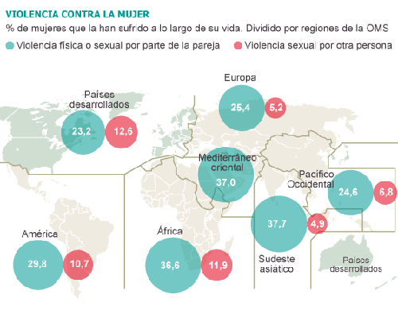
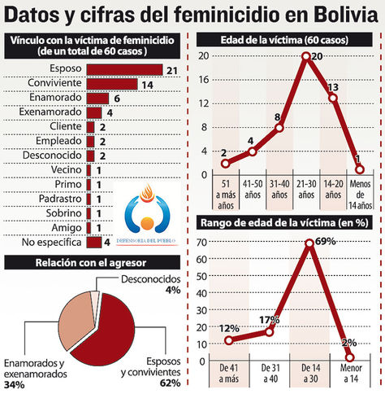
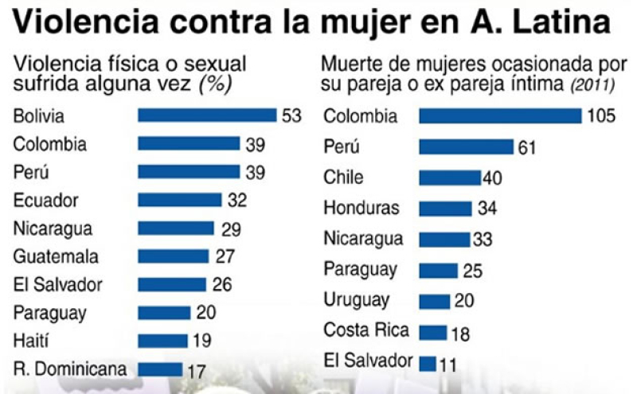
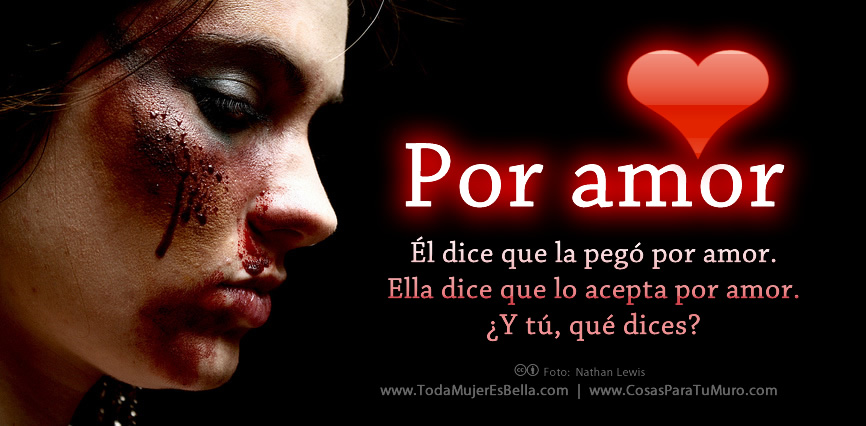
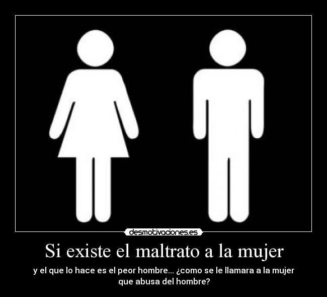
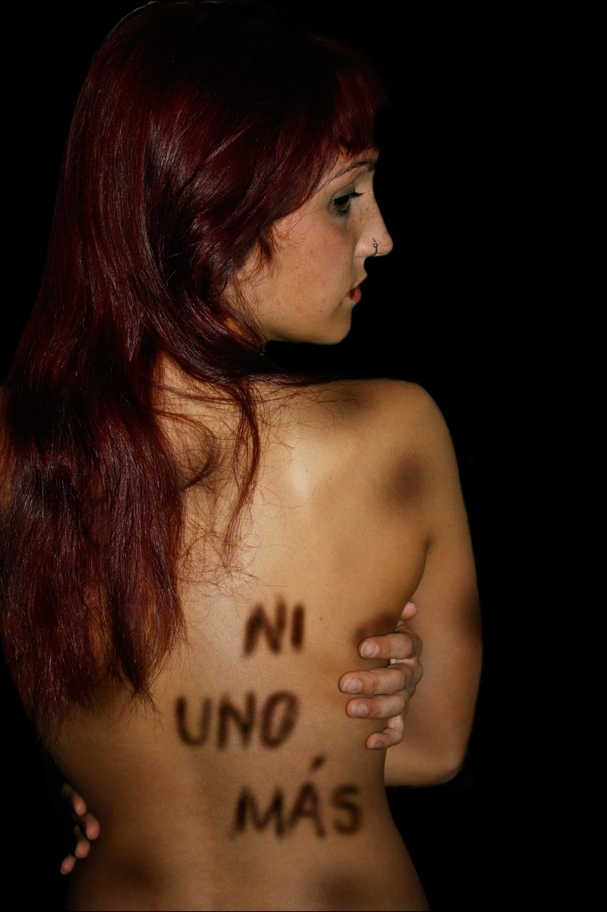
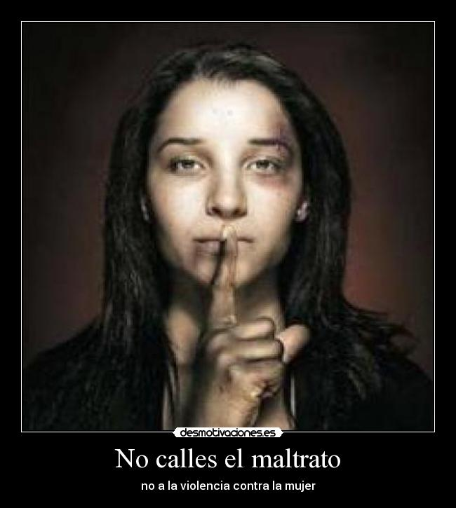
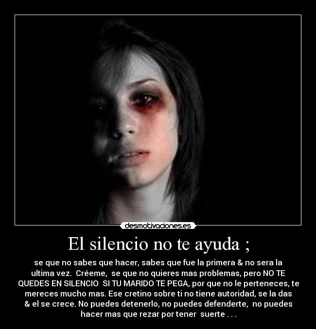
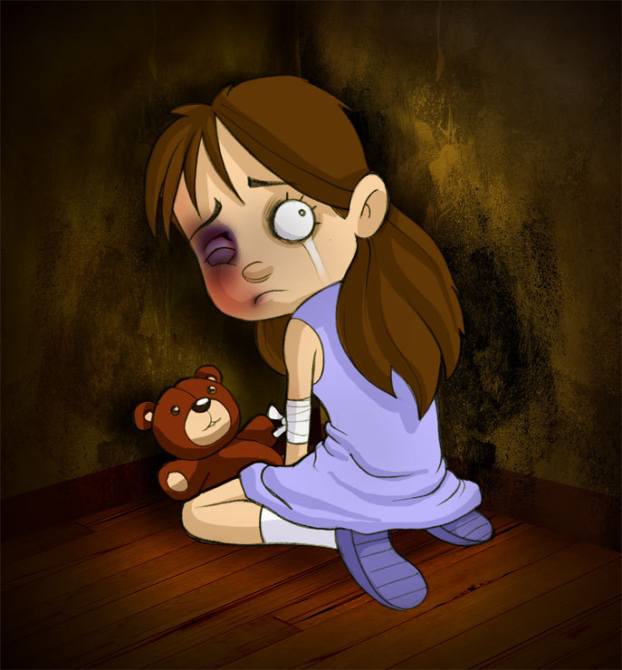
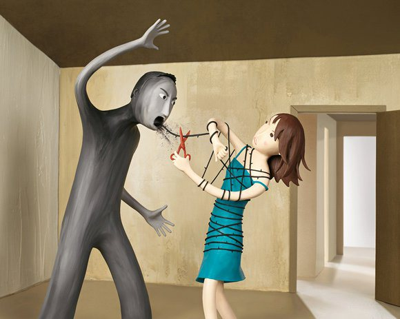

La violencia contra la mujer adopta formas diversas, incluidos la violencia en el hogar; las violaciones; la trata de mujeres y niñas; la prostitución forzada; la violencia en situaciones de conflicto armado, como los asesinatos, las violaciones sistemáticas, la esclavitud sexual y el embarazo forzado; los asesinatos por razones de honor; la violencia por causa de la dote; el infanticidio femenino y la selección prenatal del sexo del feto en favor de bebés masculinos; la mutilación genital femenina y otras prácticas y tradiciones perjudiciales.
La Declaración sobre la eliminación de la violencia contra la mujer, adoptada por la Asamblea General de las Naciones Unidas en 1993, demuestra el reconocimiento y la comprensión internacionales de que la violencia contra la mujer es una violación de los derechos humanos y una forma de discriminación contra la mujer.
En la Plataforma de Acción adoptada en la Cuarta Conferencia Mundial sobre la Mujer, celebrada en Beijing en 1995, se define la violencia contra la mujer como una de las 12 esferas de especial preocupación que deben ser objeto de particular hincapié por parte de los gobiernos, la comunidad internacional y la sociedad civil.
En su 42o período de sesiones, celebrado en 1998, la Comisión de la Condición Jurídica y Social de la Mujer de las Naciones Unidas propuso nuevas medidas e iniciativas que deberían aplicar los Estados Miembros y la comunidad internacional para poner fin a la violencia contra la mujer, incluida la incorporación de una perspectiva de género en todas las políticas y programas pertinentes. Entre las conclusiones convenidas del período de sesiones figuran medidas destinadas a prestar apoyo a la labor de las organizaciones no gubernamentales, combatir todas las formas de trata de mujeres y niñas, promover y proteger los derechos de los trabajadores migrantes, en particular las mujeres y los niños, y promover las actividades coordinadas de investigación sobre la violencia contra la mujer.
PREGUNTAS FORMULADAS
1.-¿Qué se entiende por violencia contra la mujer?
se entiende todo acto de violencia basado en la pertenencia al sexo femenino que tenga o pueda tener como resultado un daño o sufrimiento físico, sexual o psicológico para la mujer, así como las amenazas de tales actos, la coacción o la privación arbitraria de la libertad, tanto si se producen en la vida pública como en la vida privada’.
2.-¿Cuáles son las formas de ejercer esta de violencia?
Aunque es difícil distinguir entre diferentes tipos de violencia ya que éstas no son excluyentes, múltiples y a cada cual más terrible, son las formas de ejercer este tipo de violencia: la violencia doméstica, el acoso sexual, la violación sexual, la mutilación genital femenina, los matrimonios forzados, los crímenes de honor, el tráfico de mujeres, la prostitución forzada, la violación sistemática como arma de guerra, la esterilización, el aborto y el embarazo forzado, la esclavitud sexual, el infanticidio femenino, y la selección prenatal por razones de sexo.
3.-¿Qué se esta haciendo para acabar con la violencia de género?
El "GOBIERNO" habilito una linea gratuita de denuncias en casos de maltrato a la mujer (800-10-1545)tambien esta la "LEY INTEGRAL PARA GARANTIZAR LAS MUJERES UNA VIDA LIBRE DE VIOLENCIA"
4.-¿Qué lleva a una mujer a justificar el maltrato por parte de su pareja?
muchas mujeres ni se dan cuenta de que son víctimas de abuso, sino que creen que todo se debe a factores como el estrés, problemas en el trabajo, alcohol, drogas, entre otros.
5.-¿Cuáles son las principales excusas que una mujer se dice a sí misma y a los demás sobre la conducta de su pareja?
Si aguanto un poco más, las cosas cambiarán y se mejorará la relación.
Si él no tomara alcohol (no usara drogas, tuviera un mejor trabajo, tuviera más dinero, etc.), no me golpearía.
Algo hice mal yo.
Él trabaja, trae dinero a la casa, y es bueno con los niños.
¿Qué más se puede pedir?Él me ama Solo que a veces pierde el control.
Fue una sola vez…Está pasando un rato duro.
Hay que comprenderlo.
6.-¿Qué señales de alerta pueden hacer reaccionar a una mujer de que su pareja puede tener episodios de violencia intrafamiliar?
Irritable Con signos de mal humor
Menosprecios
Ira contenida
Indiferencia hacia su pareja
Largos silencios.
7.-¿Puede haber verdadero amor de parte de un hombre que maltrate físicamente a su compañera?
una persona que maltrata física, emocional, sexual, o económicamente, en general no tiene un amor profundo por sí mismo, y al no poder amarse, no puede amar a los demás de manera plena.
8.-¿Cómo lograr que una mujer entienda que, si bien en todas las parejas hay conflictos y diferencias, éstas no tienen por qué ser resueltas con violencia?
lo más importante es reconocer que existe el problema, luego animarse a buscar ayuda, y finalmente, con apoyo de toda la sociedad aprender a amarse y respetarse a sí misma.
9.-¿Puede una mujer cambiar el comportamiento de un hombre violento sola sin la ayuda de algún profesional?
“Nadie puede cambiar a nadie su comportamiento, si esa persona no desea asumir por su propia cuenta el deseo de cambio”
Un hombre violento es una persona que necesita amor y apoyo de profesionales, de familiares y de amigos, pero sobre todo, necesita tomar la decisión de querer dar vuelta a su vida en forma positiva.
Además, en el momento en que la mujer ocupa el papel de víctima, es imposible que ella ayude al otro, pues en ese momento, ella no puede apoyarse ni a sí misma.
10.-¿Cómo convencer a una mujer que abandonar a un hombre que la maltrata no es traicionar el compromiso del matrimonio?
en realidad no es cuestión de “convencerla”, pues la decisión tiene que venir desde adentro de cada quien, pero sí se puede ayudar en el proceso de reconocer su realidad y apoyarle en sus decisiones.
También es importante que los líderes y formadores de opinión, empiecen a entender y a promover que el maltrato es absolutamente inaceptable
11.-¿Cómo convencer a una mujer que NINGUNA conducta que ella tenga, puede ser motivo para ser maltratada?
Lo más importante es fomentar la auto-estima de tal manera que todos se respeten y se amen sin diferencia de género, pues en el momento en que tengamos la autoestima en alto, nos daremos cuenta de que no merecemos el maltrato por ninguna razón.
VIDEOS
IMAGENES







